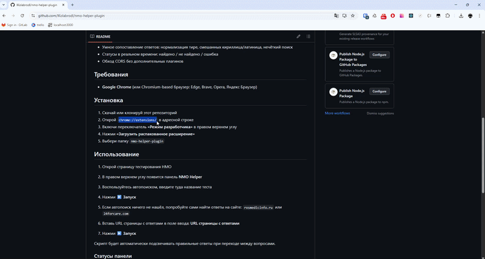
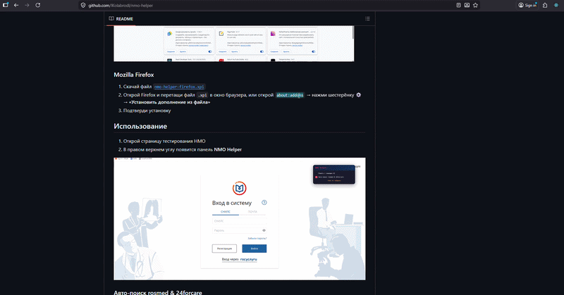
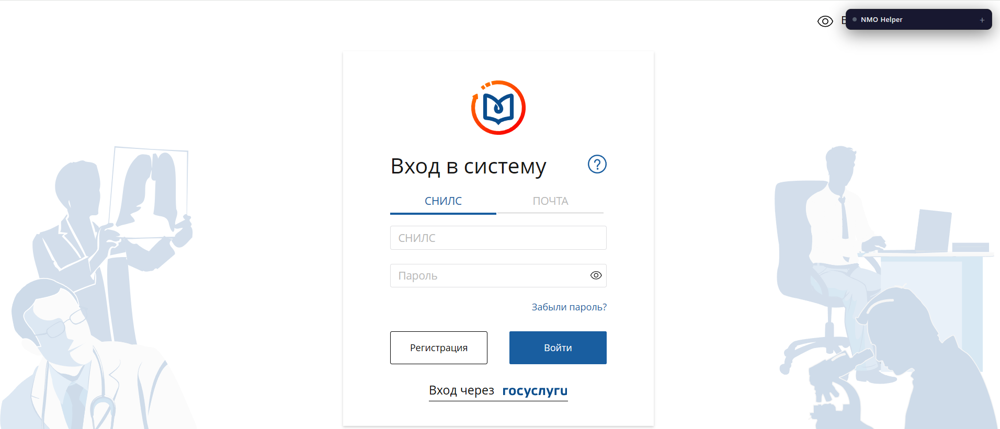
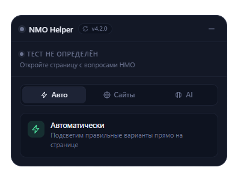
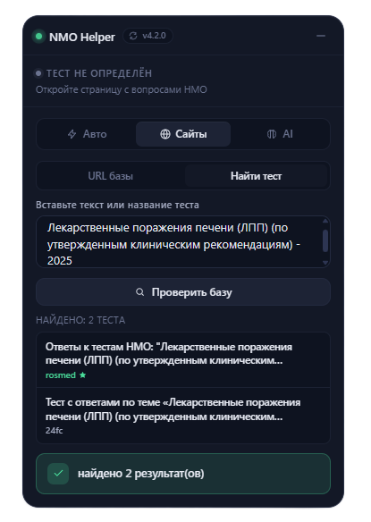
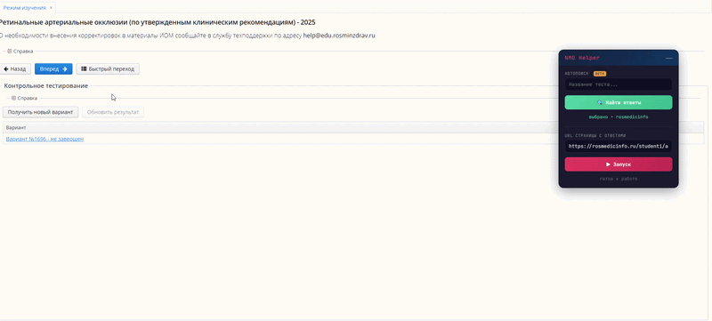
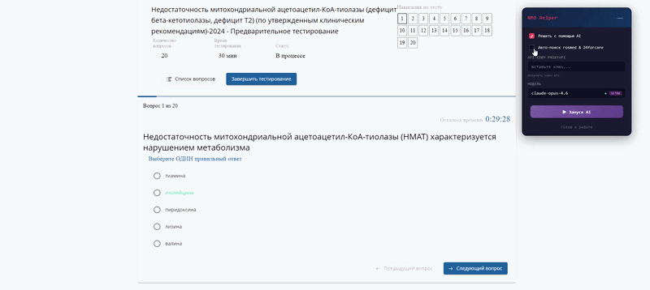

Установка, настройка и использование NMO Helper — с картинками и пояснениями
Выберите ваш браузер и следуйте шагам
chrome://extensions/ в адресной строкеnmo-helper-plugin
Процесс установки в Chrome
.xpi прямо в окно браузера, или откройте about:addons → нажмите шестерёнку ⚙ → «Установить дополнение из файла»
Процесс установки в Firefox
Откройте страницу тестирования НМО — в правом верхнем углу появится панель NMO Helper
После установки расширение активируется автоматически на страницах портала НМО. Плавающая панель появляется в углу экрана, её можно перетаскивать и сворачивать. Позиция и состояние сохраняются между сессиями.

Панель NMO Helper на странице теста
При включённой галочке «Авто-поиск rosmed & 24forcare» плагин сам определяет тему теста, ищет ответы на обоих сайтах и подсвечивает правильные варианты. Никаких действий от вас не требуется — просто включите и проходите тест.

Автоматический поиск ответов
При отключённых галочках вы можете искать ответы вручную. Полезно, чтобы заранее узнать, есть ли решение, не заходя в сам тест.

Поиск теста по названию

Процесс ручного поиска ответов
Подключите нейросеть для решения тестов
AI-режим позволяет решать тесты с помощью нейросетей. Поддерживаются модели OpenAI (GPT), Google Gemini и Anthropic Claude через сервис proxyapi.ru — российский прокси к AI-моделям с оплатой в рублях и без VPN.
К сожалению, бесплатные API нейросетей (Google Gemini, OpenAI и др.) заблокированы для пользователей из России нашими западными друзьями, поэтому используется платный прокси-сервис.

Настройка API-ключа и выбор модели
| Уровень | Модели | Описание |
|---|---|---|
| low | gpt-4o-mini, gemini-2.0-flash, claude-haiku-4.5 | Быстрые и дешёвые, но менее точные |
| medium | gpt-4.1-mini, gemini-2.5-flash | Баланс цена/качество |
| high | o3-mini, o4-mini, claude-sonnet-4.6 | Высокая точность |
| ultra | claude-opus-4.6, gemini-3.1-pro | Максимальная точность, дороже |
| Статус | Значение |
|---|---|
| ищу тему... | Авто-режим ищет тему теста на странице |
| ищу ответы... | Идёт поиск и загрузка ответов с сайтов |
| загружаю ответы... | Идёт загрузка страницы с ответами |
| думаю... | AI обрабатывает вопрос |
| работает | Скрипт активен и мониторит вопросы |
| найдено | Ответ найден и подсвечен |
| AI (кеш) | Ответ взят из кеша без повторного запроса |
| ответ не найден | Вопрос отсутствует в базе ответов |
| ответ не совпал | Ответ найден, но не совпадает с вариантами |
| ошибка сети | Не удалось загрузить страницу с ответами |
| неверный API-ключ | API-ключ невалиден или истёк |